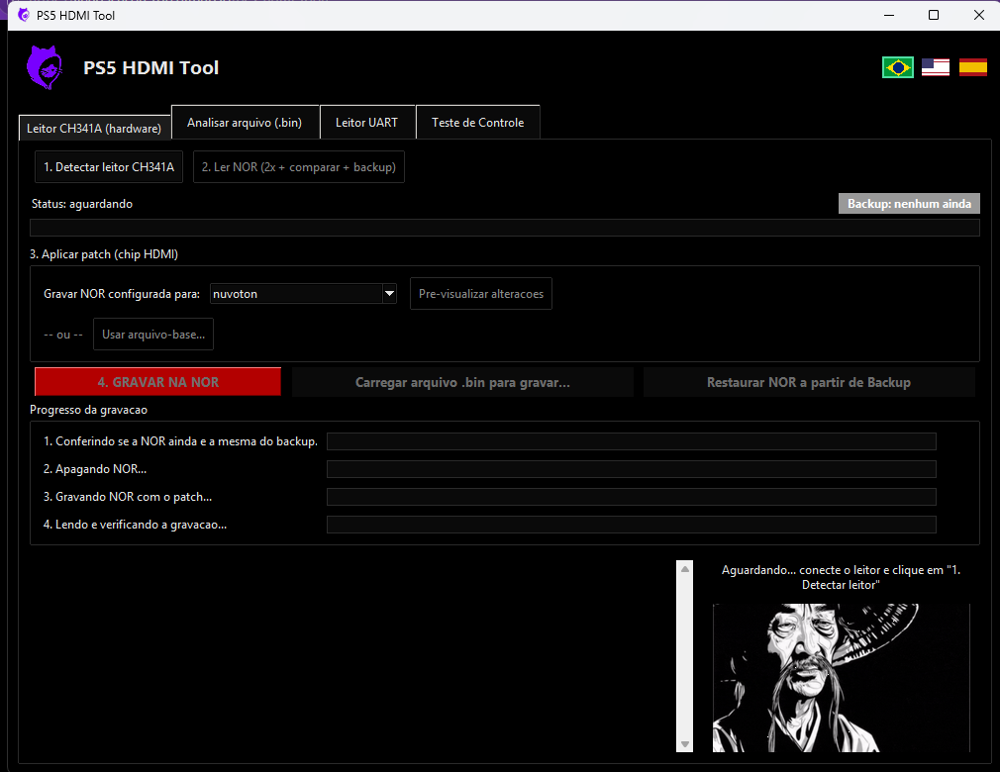

Leitura, gravação e conversão de chip HDMI na NOR do PS5 Slim
(Realtek RTD2175P ⇄ Nuvoton/Panasonic MN864739) via leitor CH341A
🇧🇷 Português (nesta página) · 🇺🇸 English
Desenvolvido por DatZero Foundation — datzerogames.com.br · Técnico criador: Jefferson Honorio
PS5 HDMI Tool é uma ferramenta gratuita que aplica um
patch no arquivo .bin da memória NOR de uma
placa PS5 Slim, tornando possível instalar um chip HDMI
Nuvoton (MN864739) em placas que originalmente exigem um
chip Realtek (RTD2175P) — e também no sentido contrário.
Em outras palavras: conversão de CI HDMI do PS5 Slim por reaproveitamento
de componente, uma alternativa pra quando o chip Realtek original está em
falta no mercado de reposição.

Esta ferramenta é o lado software da conversão. A troca física do chip (retrabalho/microssoldagem) é feita com o Interposer DatZero — os dois são complementares: o Interposer resolve a parte elétrica/física do CI HDMI, e o PS5 HDMI Tool resolve a parte da NOR.
Via leitor CH341A, com dupla leitura e verificação byte a byte antes de salvar qualquer backup.
Gera o patch da NOR pra trocar o chip HDMI detectado, com pré-visualização antes de gravar.
Analisa e converte um dump de NOR salvo no PC, sem precisar de placa conectada.
Interface completa em português, inglês e espanhol, trocando na hora pelas bandeirinhas.
Baixe o instalador PS5_HDMI_Tool_Setup.exe na
página de releases.
Ele instala o programa e registra o driver do leitor CH341A automaticamente —
não precisa instalar Python nem nada além dele.
conserto PS5 HDMI · reparo placa PS5 sem imagem/sem vídeo · troca chip HDMI PS5 · Realtek RTD2175P sem estoque · substituir RTD2175P por MN864739 · Nuvoton MN864739 no lugar do Realtek · programador CH341A PS5 · leitura e gravação de NOR PS5 · patch de NOR PS5 · interposer HDMI PS5 Slim · PS5 no video fix · PS5 HDMI chip repair · PS5 HDMI chip swap